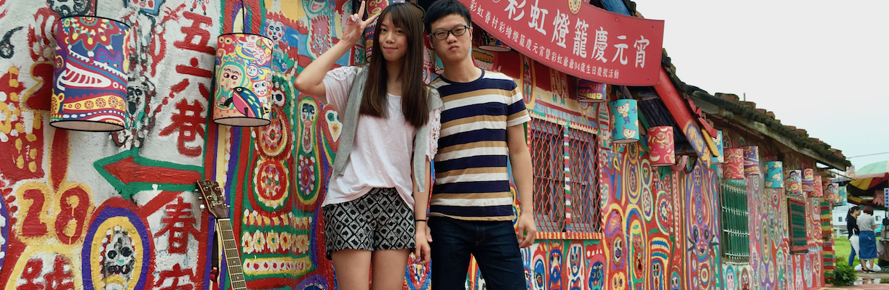
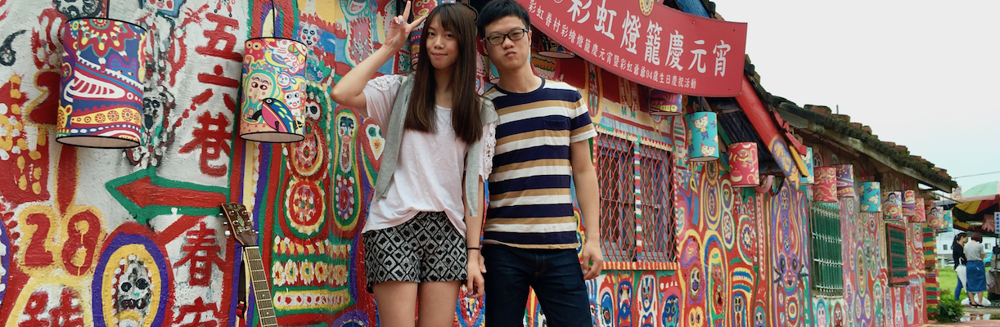
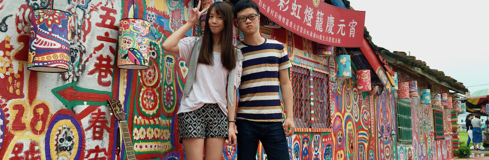

It's about a beautiful...
STORY BETWEEN US
Since 2016.03.11
The Spark

INVISIBLE SPARK
高雄
這是我們第一次一起到外地去玩，心裡超期待能跟你一起去走去看，也很害怕出包迷路，壽山動物園、紅毛港、駁二藝術特區，看到日常生活看不到的事物感覺很新鮮，尤其能跟你一起特別幸福，新崛江、六合夜市，雖商業氣息， 但我們穿著拖鞋漫漫散步感受悠閒，旗津，充滿海洋活力的地方，那天天氣晴朗，我只記得你很美，高雄三天兩夜、第一次旅行、簡單而幸福
MEMORY
Kaohsiung
花蓮・宜蘭
台灣本島的最東邊∙花蓮，我們所嚮往的整片藍海，透過民宿窗戶映入我們的眼裡，一起走進海洋公園，可愛調皮的海獅與海豚，花蓮夜市的人潮，七星潭的鵝卵石堆疊，公正街包子店的饕客壅擠，這是我們感受海洋熱情氣息的一天
宜蘭傳統藝術中心、羅東文化工場、羅東林業園區、羅東車站旁的幾米廣場以及超擠的羅東夜市，我們一起逛過走過，拍了好多文青藝術照，在台灣的東部插上的腳印的旗子
MEMORY
Hualien-Yilan
台中・彰化
台中，這是一個熟悉又有些陌生的地方，彩虹眷村雖然小，但有彩虹超人幫我們拍有趣照片，勤美散步、綠光計劃很美，行程雖然普通簡單，但我們心裡很踏實，因為能跟你一起手牽著手走在我們的故鄉土地上
鹿港老街走走逛逛、吃吃喝喝，彰化肉圓、八卦山大佛，帶著你走過我的求學地，沒有別的原因，就是想讓你更了解我，讓我們的心能往對方再踏近一大步
MEMORY
Taichung-Changhua
基隆・菁桐
古色古香的九份，很你一起在小巷裡走逛，一起吃有名的芋圓，星空草原，真的好美好美，雖然路途遙遠不方便還遇到下雨，不過還是不虛此行，夜晚前往山間菁桐的柴油火車顯得神秘，彷彿就要進到另一個世界
早晨的菁桐很晴朗，跟你一起漫步在單軌的鐵路旁很幸福，十分車站放天燈，侯桐車站看貓看古礦坑，一趟兩天一夜的懷舊之旅，在回程的客運上睡夢中甜蜜地畫下句點
MEMORY
Keelung-
台南
充滿古蹟的台南，雖然颱風剛過，不過不影響我們的行程，因為有我們的地方就有晴天，奇美博物館純白的建築好雄偉，裡面的展覽很新鮮，市區裡的赤崁樓故事精彩，安平古堡隨意走走，一路上我們邊走邊吃，有國華街 的小吃，正興街的路邊演唱，早晨長長排隊人龍的粥殿宇早餐店，晚上的花園夜市、東大夜市，最後一天還去長了有名的港式飲茶店，台南三天兩夜騎著摩托車到處吹風到處走，輕鬆而愜意
MEMORY
Tainan
新竹
MEMORY
Hsinchu
play
 
